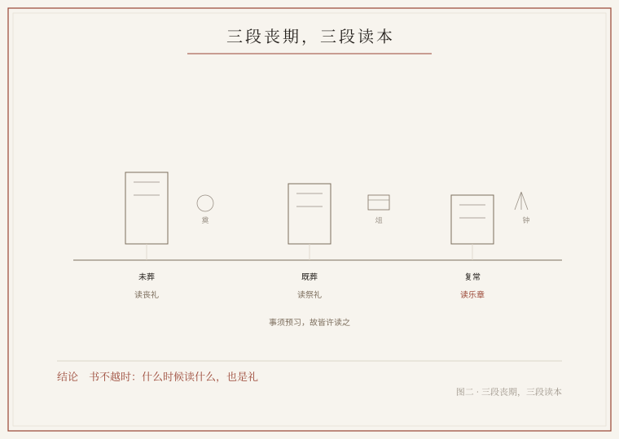

曲礼下 · 二·十五 · 第 138 课
居丧未葬，读丧礼；既葬，读祭礼；丧期复常，读乐章。注「为礼各于其时」。
说什么事：居丧，未葬，读丧礼。既葬，读祭礼。丧复常，读乐章。
落在哪一层：仪，兼及礼意。论读书也有其时。
为何编在此位：上节论名谥不可改，此节论学礼不可错时。一个讲不改，一个讲不错，皆是分寸。
【经】居喪，未葬，讀喪禮。既葬，讀祭禮。喪復常，讀樂章。
【注】為禮各於其時。
【疏】「居丧」者，居父母之丧也。丧礼谓朝夕奠下室、朔望奠殡宫及葬等礼也。此礼皆未葬以前。「既葬，读祭礼」者，祭礼，虞、卒哭、祔、小祥、大祥之礼也。「丧复常，读乐章」者，复常，谓大祥除服之后也。乐章，谓乐书之篇；章谓《诗》也。禫而后吉祭，故知禫后宜读之。此上三节，事须预习，故皆许读之。
读 疏「事须预习，故皆许读之」。读是预习，不是行。
丧礼 疏「朝夕奠下室、朔望奠殡宫及葬等礼」。未葬以前之事。
祭礼 疏「虞、卒哭、祔、小祥、大祥之礼」。既葬以后之事。
复常 疏「大祥除服之后」。丧期已尽，复其常度。
乐章 疏「乐书之篇；章谓《诗》也」。非今之乐曲，是乐之文字。
各于其时 注四字。礼有其时，学亦有其时。
居父母之丧，未葬时读丧礼；既葬之后读祭礼；丧期已尽、复于常度，才读乐书诗章。
三段丧期，三段读本。读不为消遣，为的是下一个礼节能做得对。此节把「学」放进礼的时间表里：什么时候学什么，也是礼。
第一层 预习之义 疏一语道破：「事须预习，故皆许读之。」居丧本当废业，然礼许读，因为不读则行不来。
第二层 时与书相配 未葬读丧礼，是读眼前正要做的事；既葬读祭礼，是读下一步要做的事；复常读乐章，是读已经出了丧期才可碰的东西。书不越时。
第三层 乐为最后 居丧不言乐，故乐章在最后。这不是偶然的次序，是丧期的重量在排序。
第四层 读与行的分别 读是知，行是践。此节只说读，不说行；行的时，另在别节。知可以先于行，行不可先于时。
与今日何干 人在大事临头才开始翻手册，来不及。古人把「什么时候读什么」写进礼里，就是承认人需要预习。
| 左 | 右 |
|---|---|
| 未葬，读丧礼 | 朝夕奠、朔望奠、葬等礼 |
| 既葬，读祭礼 | 虞、卒哭、祔、小祥、大祥 |
| 丧复常，读乐章 | 大祥除服之后 |
| 乐章 | 乐书之篇，章谓诗 |
| 事须预习 | 故皆许读之 |
| 为礼各于其时 | 书不越时 |
画一条自左向右的长横线（示意丧期），线上立三枚书册状的薄板，自左至右依次排列，板高渐次略降；每枚薄板之下画一道短短的垂线，垂线的长短依次递减（示意时段越来越短）。第一枚板旁画一只小小的盛器（示意奠），第二枚板旁画一枚小小的俎（示意祭），第三枚板旁画一枚小小的编钟轮廓（示意乐）。板上皆留空白，不写文字。赭色只用在第三枚板的轮廓上。
